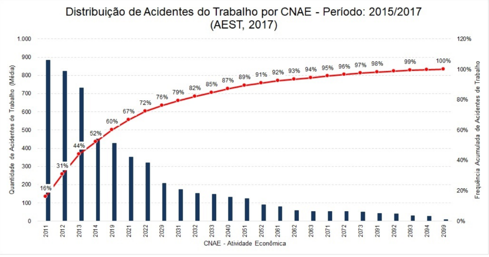

Sobre o SIMOREQ
O SIMOREQ é um sistema embarcado de monitoramento químico inteligente, baseado na aquisição, processamento e correlação de dados provenientes de múltiplos sensores eletroquímicos e físico-químicos. Ele apresenta a função de realizar identificação indireta de substâncias, monitoramento contínuo, geração de alertas e armazenamento de dados.
 Modelo 3D
Modelo 3D
O que o nosso projeto tem a oferecer
O sistema integra uma arquitetura multissensorial capaz de aumentar significativamente a segurança no manejo de substâncias químicas. O recipiente inteligente realiza a leitura de parâmetros físico-químicos como pH, condutividade elétrica, oxidação, temperatura, possível emissão de gás, medição de massa e viscosidade. O sistema fornece ao usuário informações críticas para identificação e caracterização da substância, reduzindo riscos operacionais e aumentando a confiabilidade do processo.

A indústria química no Brasil tem grande força, representando 11% do PIB, e ocupando a 10ª posição mundial nesse quesito. Com esses processos existem acidentes na produção dos resíduos, 9 a cada 100.000 trabalhadores sofreram de acidentes fatais em 2025. O nosso projeto oferece uma etapa de segurança a mais, um intermediador do manejo e do armazenamento.
Interface
A nossa interface foi planejada para ser intuitiva e de fácil uso ao usuário. Temos a disponibilidade de um procedimento de registro para novas substâncias com um banco de dados para armazenar, uma aba de conexão para o aparelho, uma integração com IA para auxílio dos procedimentos realizados na interface e monitoramento das substâncias em tempo real.
Produtos
Nossa Equipe
Gabriel Arantes
montagem e documentação
Luis Felipe
lading page e documentação
Luis Gustavo
front e back-end
Lorenzo Nacco
design 3D e montagem
Pedro Miguel
design 3D e montagem
Samuel Amate
banco de dados
Thomas Adrian
tech lead, front e back-end